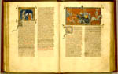

Vincentius van Beauvais, Speculum historiale. Boek I-VIII. In de Franse vertaling van Jean de Vignay. Handschrift op perkament, 358 ff., 370 x 270 mm. Parijs, tussen 1332 en 1350. -- (VGG F 3 A)
Jean de Vignay voltooide in 1332 de Franse vertaling van het Speculum historiale, een reusachtige geschiedenis van de wereld, die de geleerde dominicaan Vincentius van Beauvais bijna een eeuw eerder voor Lodewijk de Heilige had samengesteld. De omvang van het werk wordt wel heel duidelijk, als men bedenkt dat het hier getoonde grote handschrift maar het eerste van de vier delen is die samen het hele werk vormen.
Het initiatief voor de vertaling was uitgegaan van de Franse koningin Johanna van Bourgondië; het Leidse handschrift heeft toebehoord aan haar oudste zoon, de latere Jan II, koning van Frankrijk van 1350 tot 1364, nog vóór hij de troon besteeg. Dit exemplaar is dan ook tegelijkertijd een van de oudste handschriften van de Franse tekst én een van de meest luxueuze. De royale bladindeling en het verzorgde schrift, de prachtige initialen en een schat aan miniaturen (te zamen niet minder dan tweehonderdtachtig!) maken het tot een werkelijk vorstelijk handschrift. De voornaamste miniaturist in het handschrift, die onder meer de getoonde bladzijden 174v-175r verluchtte, is een goed voorbeeld van het hoge niveau dat de Noord-Franse miniatuurkunst in deze dagen had bereikt.
De afbeelding rechts geeft een tweetal episoden weer uit de strijd tussen Alexander de Grote en de Indische koning Porus, die door de gemeenschappelijke omlijsting tot een enkele illustratie zijn verwerkt. Dit samensmelten van twee opeenvolgende gebeurtenissen is in de middeleeuwen niet ongewoon en de beschouwer had hiermee dan ook geen moeite. De hoofdpersoon Alexander is in twee verschillende houdingen duidelijk herkenbaar. Ter linkerzijde is het moment weergegeven waarop het fameuze paard van de grote koning, Bucephalus, wordt neergestoken door de aanstormende Porus, ter rechterzijde ontsnapt Alexander aan de dood door zich vast te grijpen aan de staart van het paard van een van zijn medestrijders.
Even gewoon is het feit dat de voorstelling tot in details gebaseerd is op een riddergevecht in de veertiende eeuw. De miniaturist baseerde zich voor zijn voorstellingen op wat de tekst vertelde, zoals is vastgesteld in de studie over het handschrift van de hand van Claudine Chavannes-Mazel. Daar vindt men ook een nadere analyse van de getoonde miniatuur.
De legers zijn binnen het beperkte formaat van de miniatuur gereduceerd tot enkele ridders. De beweeglijkheid wordt gesteund doordat de illustrator waar nodig spontaan met enkele details, zoals hier de standaard van Alexander en het paard rechts, het te nauwe kader overschrijdt. Een landschap ontbreekt. Dat de episodes zich buiten afspeelden, is weergegeven door de golvende ondergrond. In de miniatuur op de linkerpagina, waar Alexander een hatelijke brief van de Indische koning in ontvangst neemt, is het feit dat de gebeurtenis zich binnen afspeelt, door een architecturale omlijsting aangegeven. De achtergrond bestaat hier en elders in het handschrift eenvoudig uit een versierd gekleurd vlak, waarin de in deze tijd favoriete kleuren, rood of blauw overheersen.
Literatuur
- L. Delisle, Recherches sur la librairie de Charles V. Paris 1907, t. 1, p. 278-280.
- A.W. Byvanck, Les principaux manuscrits à peintures conservés dans les collections publiques du Royaume des Pays-Bas, Paris 1931 ( = Bulletin de la Société francaise de reproduction des manuscrits à peintures. 15), p. 88-92, pl. XXVII.
- La librairie de Charles V à Paris. Paris 1968, nr. 150.
- Claudine Albertine Chavannes-Mazel, The Miroir historial of Jean le Bon: The Leiden Manuscript and its related copies. [Z.pl] 1988, 2 dln.
- Vergelijk: Les fastes du gothique, le siècle de Charles V. Paris 1981, nr. 245.
| vorige pagina | top pagina |